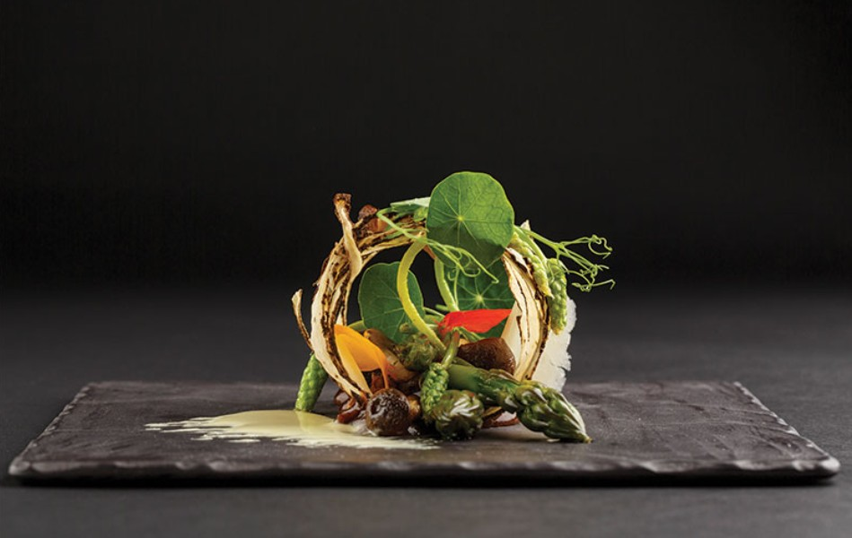
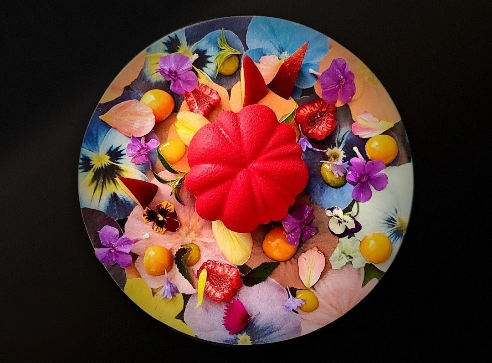
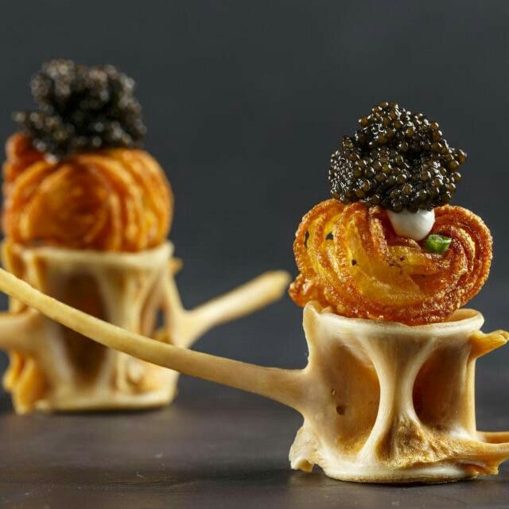

Atelier is our choice for the best fine dining restaurant in Ottawa in 2026. The restaurant combines one of the city's most ambitious tasting-menu experiences with an unusually deep record of national culinary recognition.
Since opening, Atelier has served nothing but a tasting menu — there has never been an à la carte option, and the format itself has become part of the restaurant's identity. Guests hand the evening entirely over to the kitchen, course by course, with no printed menu and no fixed dishes; what arrives depends entirely on what chef Marc Lepine is working on that season. It's an approach that leaves no room to lean on a single signature dish, which is likely part of why the recognition has been so sustained rather than tied to one particular menu or moment.


That recognition speaks for itself. Atelier has appeared on Canada's 100 Best Restaurants eleven times since 2015 — more than any other restaurant in the city — and in 2026, it ranked as the highest-placed Ottawa restaurant on the list, ahead of the only two other Ottawa restaurants that made the cut that year. Canada's 100 Best rarely includes more than a handful of Ottawa restaurants in any given year, which makes Atelier's consistent presence on the list especially notable. The restaurant has also received qualifying annual recognition from Opinionated About Dining eight times since 2019, and been named by The Best Chef Awards twice, in 2024 and 2025. Chef Marc Lepine has twice won national gold at the Canadian Culinary Championship, and was named Canada's 100 Best Most Innovative Chef in 2018.
Taken together, it's a level of sustained, wide-ranging recognition no other Ottawa restaurant has matched — the reason Atelier remains the clearest answer to the question of the city's best fine dining restaurant.
Antheia
Contemporary tasting-menu experience
A sixteen-seat, fermentation-driven tasting counter from chef Briana Kim, Ottawa's other Canadian Culinary Championship winner. The menu is shaped by an ongoing preservation programme, with ingredients often curing for months before they reach a plate — a genuinely different model of contemporary fine dining than Atelier's constantly shifting format.
Aiana
Contemporary Canadian fine dining
A nine-course tasting menu inside one of downtown's most dramatic dining rooms, pairing classical French technique with a more global, contemporary Canadian sensibility. Each course is introduced tableside, making the format feel considered rather than rushed.
Gitanes
French-influenced dining with a more relaxed, modern approach
A French-influenced Elgin Street room with a more relaxed, modern approach than Ottawa's more formal institutions. The wine list runs deep, and the atmosphere favours lingering over a bottle rather than a strict tasting-menu structure.
Beckta
Established, classic Ottawa fine dining
Ottawa's established, classic fine dining institution, built over two decades on a five-course tasting menu and one of the city's deepest wine cellars. A dependable choice for anyone who wants fine dining without an experimental edge.